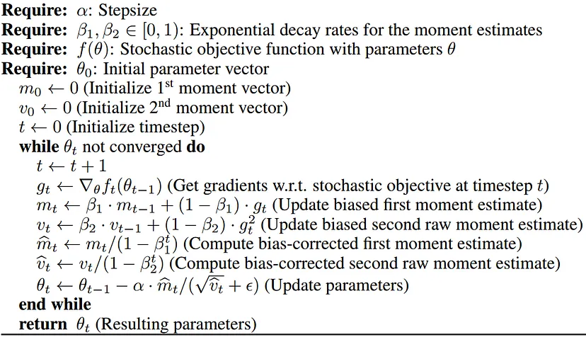
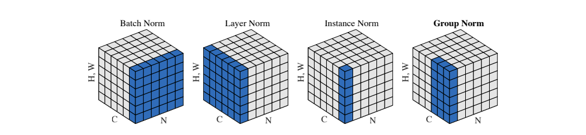

神经网络入门
文章目录
最近有好多朋友受困于手写神经网络的作业，因此我将自己的学习思路总结成本文，希望能提供一定的帮助～
向量
在神经网络中，高维向量（vector）和张量（tensor）没有太大区别。从代码层面，两者的实现都是一个高维数组。
引入向量的原因是，神经网络解决的问题往往不是数字到数字的映射，而是一个事物到另一个事物的变换。在写代码时我们可以用结构体或者类来表示一个对象，但这样的编程范式和语法设计主要是为了方便人的阅读。而神经网络读不懂这些。另一方面，数学上定义一个对象通常采用元组（tuple）和序列（sequence）来描述，例如我们说图灵机是一个七元组。而元组可以粗暴理解为长度固定的序列，也就是向量。
因此，神经网络只认向量，我们需要将信息转化为向量后传递给网络。
神经网络概述
神经网络本身是一个函数。它接受一个向量作为输入， 返回一个向量作为输出。具体是什么形状的输入向量和什么形状的输出向量，看你怎么设计。
以手写数字识别为例：数据集是由大量的灰度（只有黑白灰）图片组成。如果神经网络的第一层是一个线性层（linear，也称全连接 full connected，或者稠密层，dense），那么我们传递的就是一个长度为的一维向量。而如果第一层是卷积层（convolutional），那我们传递的就是一个的二维向量。
在手写数字识别这个问题中，输出向量的形状大多是长度为的一维向量。但是这个向量的含义也是不唯一的。比如说你可以利用 softmax 函数让神经网络直接输出一个离散概率分布（即输出一个向量，其中的概率是），也可以让神经网络直接输出一个向量表示每个数字的权重，然后你再自己根据权重分析出神经网络预测的概率最高的那个数字。这个其实也和误差函数的选择有关。
学习与误差
神经网络本身确实是一个函数，怎么把这个函数造出来？
C++ 里写一个函数，我们直接给出它的定义就行，这是因为你脑子里是知道函数的计算过程的，只需将它从数学语言翻译为 C++ 就行。但神经网络不一样。我们不知道手写数字的计算过程（太复杂），就没法直接给出一个满足要求的函数。为此人们开发了一套学习理论。
假设这个函数是。以下我们只讨论神经网络的学习。
是由训练数据来拟合的。也就是说我有组训练数据，要求你写出一个函数，满足。当然，实际情况下我们不知道，所以能看到的就是人工标记的训练数据。
学习是指调整神经网络，使其输出的向量尽可能服从训练数据的分布（也就是说提高在训练数据集上的准确率）。
但是无论你怎么学，都是有误差的。
- 首先这个网络拟合训练数据分布的程度，对应训练数据集上的准确率。对于这个我们就需要选择一个误差函数，使得误差函数的降低能够提高神经网络的拟合程度（大多数误差函数都是这样的），将我们的目标转化为最小化误差函数。
- 其次训练数据的分布拟合的程度，这个的解决方法是提供更多的数据，或者使用一些数据增强方法。
综上，神经网络的学习就转化为最小化误差函数。
有误差，怎么根据误差来调整神经网络？由于误差函数和神经网络上的运算大多是初等函数相关的运算，因此我们可以通过类似牛顿迭代的方式，配合一些随机化的方法，通过求导来更新网络，寻找一个足够优秀的局部最优解。
神经网络
我们先说简单的分层神经网络。用表示神经网络某一层的计算结果（第层表示读入）用上指标表示层的编号。一个层的神经网络中，每一层都对应一个函数。整个神经网络就是这个函数的复合。也就是说
记，，其中均为（高维）向量。
我们称一个高维向量每一维的长度组成的元组为向量的形状（shape）。那么自然地，你需要保证的输出的形状与输入的形状是一样的。
下面我们列举一些典型的层。下面的域可以简单视为为。
线性层
首先我们给出一个简洁的定义：一个线性层对应一个函数，其中是已知常数，。
重复一遍：满足：
都是属于这一层的参量，他们的值是无法直接给出的，需要在学习的过程中不断更新。一个线性层的参量规模是所有参量的分量总数，也就是。
激活层
有的地方讲解时，喜欢把激活层当成一个激活函数，放在别的层里面。但是这种混杂在一起的做法不利于后面讲反向传播。所以我们把它直接拿出来作为一个层。
一个激活层对应一个函数，且对满足
其中被称作激活函数。常用的激活函数有
- Sigmoid：；
- ReLU：；
- Leaky ReLU：。
这东西不是一个线性变换，所以没法用矩阵来简洁定义。
激活函数层的参量数取决于的参量数。在上面的例子里，Sigmoid 和 ReLU 没有参量，而 Leaky ReLU 中的如果会在学习的过程中变化，那就算一个参量，否则不算参量。
设置激活层的意义在于使神经网络变得不那么线性，有助于表示更多的计算方式。
卷积层
卷积层对应一个函数。和表示读入的通道数和输出的通道数。另外不能随意指定。为了准确描述卷积层，我们需要先介绍它的参量：
- 核（kernel）：表示个大小为的卷积核。
- 偏移（bias，可以没有）：，分别表示每个卷积核的偏移量。
对，我们先考虑简单的情况。
p=1, q=1
这时的形状退化为，退化为一个单独的参量。首先我们给出二维卷积的计算：
平凡情况下，，在这种情况下不难算出。
但是到过程中可以有猫腻。假设两个维度上的步长（stride）分别是。一般地，我们有
平凡情况即。可以发现。
设置步长的意义是减小神经网络的规模。
一般情况
为了防止巨大多的公式，我们把和的步长为的二维卷积（也就是上面那个式子）记作
这里的对应上面时的退化的，对应时的退化的。在一般情况下：
卷积层的参量规模为（注意这和无关，也就是说和读入图片的规模无关）。
与卷积层相关的还有很多，例如池化层，反卷积层等等。除此以外还有一些优化训练的层，比如 dropout 层。
反向传播概述
在接下来的表述中，表示神经网络对应的函数，表示某一层的函数。
对于一组训练数据，神经网络一个基本的学习包含以下几个步骤：
- 前向传播：计算。
- 计算误差：。
- 计算梯度：首先是误差梯度。由于，因此最后一层的输出的梯度就是误差梯度。然后我们一层一层倒推，对每个均求出，同时对神经网络的每一层的参量求出关于的梯度。
- 根据梯度更新神经网络的参量。
误差函数
下面列举一些简单的误差函数。
交叉熵（cross entropy）：两个分布（离散分布可以等价于向量）的交叉熵定义为
关于交叉熵有，其中是 KL 散度，定义为
KL 散度可以衡量两个概率分布的差异程度，因此固定，那么交叉熵也可以。两者都是在时取到最小值。
均方差（mean square error）表示分量个数：
这两个函数都可以用于估计神经网络的误差。交叉熵算出来的误差值的梯度会大一些，利于梯度下降。
另外，要将一个向量的分量转化为概率分布，常用 softmax 函数：
反向传播
偏导数与梯度：偏导数可以粗暴地理解为对多元函数中的某个变元求导数（把其他变元当作系数）。神经网络中，向量对误差的偏导数被称作梯度（gradient）。
对向量求偏导其实就是对它的每个分量分别求偏导，也就是说对于向量，它的梯度定义为
高维向量同理。
下面我们来推导一下简单的分层神经网络的反向传播关系式。
线性层
前向传播：满足：
已知，我们要求，那么根据上面的公式，结合链式法则，可以推导出
这里用到的一个简单事实是。对求和的原因是，改变会造成所有的（）都发生变化，所以的偏导就是它们变化的和除以的变化量。
然后对于这一层的参量，我们都要求出他们的梯度：
这里用到的一个简单事实是。接下来对：
所求的用于向上一层传递，和则是这一层的参量对应的梯度。
细心的朋友还会发现，线性层的反向传播同样可以写成矩阵乘法的形式：
激活层
前向传播：满足
已知，我们要求，那么非常显然
激活层通常没有参量，所以不需要给参量求梯度。有的话推一下式子就行。
梯度下降
通过反向传播，我们就得到了神经网络的所有参量的梯度。每一层的梯度拼起来就是整个网络的梯度，记作。
接下来我们来说怎么梯度下降（gradient descent）来最小化误差函数。
我们在讨论梯度下降时是对着整个网络的梯度讨论，但落实到具体的代码实现时其实还是对每一层的参量分别拿它自己的梯度更新（毕竟梯度下降的公式一般是 element-wise 的）。
朴素的梯度下降是指，其中是学习率，一般。
通俗来说，对于一维的情况，如果导数大于，那就得往回走；否则就继续向前，这样才能走到一个极小值。所以要找到一个极小值那么我们往导数的反方向走就可以了。
分批处理数据（batch）
为了提高梯度下降的稳定性，我们可以先求出多个数据的梯度，将它们求一个平均值，再用去做梯度下降。这样做的好处是梯度下降的方向会更加“正确”，训练时的波动幅度也会降低。
随机梯度下降
随机梯度下降（stochastic gradient descent）是指通过将测试数据随机打乱，然后采用朴素的梯度下降公式不断更新网络的参量。打乱数据是一种数据增强的方式。
自适应梯度下降
自适应梯度下降是一个大的分类，包含一大堆梯度下降的优化算法。这里放一个比较著名的 Adam 算法（没啥好讲的，毕竟我也没研究）：

代码实现
困扰大家的除了神经网络本身，恐怕还有 python 和 NumPy 的使用。
python 本身不算难，有 C++ 基础的同学可以在半天甚至一个小时内基本学会。但是 NumPy 就比较恶心了，这个库的学习成本远高于 python 本身。
举个例子：
>>> import numpy as np
>>> a = np.array([0, 1, 2])
>>> b = np.array([4, 5, 6])
>>> c = np.array([
... [1, 2, 3],
... [4, 5, 6],
... [7, 8, 9]
... ])
>>> a + 3 # 向量加数字
array([3, 4, 5])
>>> a + b # 形状相同的两个向量相加
array([4, 6, 8])
>>> a + c # 形状不同的两个向量相加
array([[ 1, 3, 5],
[ 4, 6, 8],
[ 7, 9, 11]])
>>> b[a] # ???
array([4, 5, 6])
>>> c[a] # ???
array([[1, 2, 3],
[4, 5, 6],
[7, 8, 9]])如果你看懂加号 + 的用法了，说明你具有一些基本的举一反三能力。而如果你能看懂中括号 [] 的使用方法，那么相信 NumPy 对你来说非常容易上手。
NumPy 入门
NumPy 提供了向量的一系列运算，非常适合数据处理。
np.zeros 可以创建全为的向量：
>>> a = np.zeros((3, 2, 1)) # 创建一个 3 x 2 x 1 的三维向量。内层括号是 tuple 的括号，不能省
>>> a
array([[[0.],
[0.]],
[[0.],
[0.]],
[[0.],
[0.]]])
>>> a.shape # a 的形状
(3, 2, 1)np.random.normal 可以创建一个服从正态分布的随机向量。
当然，如同上面的示例，np.array 也可以用于创建向量。
要理解 NumPy 中各种各样函数和运算符的用法，我们需要理解它的一个概念：广播（broadcasting）。
Broadcasting1
NumPy 中大多数的运算是“点对点”计算的（element-wise）。也就是说如果两个向量形状相同，那么都是点对点的数值运算：
>>> a = np.array([0, 1, 2])
>>> b = np.array([4, 5, 6])
>>> a + b
array([4, 6, 8])
>>> a - b
array([-4, -4, -4])
>>> a * b
array([ 0, 5, 12])
>>> a / b
array([0. , 0.2 , 0.33333333])
>>> 但是当两个向量形状不同时，NumPy 会按照一定的 broadcast 规则将小的向量补成大的向量，然后执行 element-wise 的计算（这个是对于常规的函数，有的函数比如点积 dot 的 broadcast 规则是不同的）。
具体来说，假设的形状是，的形状是。不妨。
首先在的开头补，把它从维变成维向量。因此我们不妨设的形状是。
然后我们按照的顺序从最后一维倒着开始依次比较。如果或者或者，那么我们认为这两个维度兼容，否则就不兼容。
如果存在不兼容的维度，那么 NumPy 会直接报错，中断程序。
如果，那就把补成，相应下标的数值直接复制过来，即。同理。
操作完之后，两个数组的形状就相同了，然后就正常做计算就可以了。
Indexing2
在 C++ 中，a[i] 表示获取数组 a 下标为 i 的元素。NumPy 对此有一些狂野的用法。
假设的形状是，那么 a[x1, x2, ..., xn] 表示获取的值。
a[[r1, ..., rs]] 表示将第行取出来组成一个新的高维向量：
>>> c
array([[1, 2, 3],
[4, 5, 6],
[7, 8, 9]])
>>> c[[0, 2]] # 取出第 0 行和第 2 行
array([[1, 2, 3],
[7, 8, 9]])有了这两个基本常识后，再去理解 NumPy 的函数就会容易很多。
指南
接下来我们给出一些 NumPy 实现手写数字识别时会用到的实现，帮大家少走一些弯路。
首先我们在实现的时候，向量一般是一维，也就是行向量，而不是的列向量，因此上面的前向传播和反向传播公式其实得转置。
矩阵乘法调用
np.matmul即可，具体用法查看文档。a.reshape可以在总的元素数不变的情况下调整向量的形状，例如a.reshape((n, 1))可以将a变成的二维数组（前提是a的元素数为，否则会报错）。np.transpose和a.T都可以实现矩阵的转置。ReLU 函数和 ReLU 的导数分别可以写成
# 这里的 x 的类型是 NumPy 的数组 def ReLU(x): return (x > 0) * x def ReLU_prime(x): return (x > 0) * 1softmax 函数当较大时，会爆精度。因此需要使用一些计算技巧。注意到将所有分量减掉同一个数，softmax 不变，因此我们可以将他们都减掉最大值。而
np.sum可以求出一个高维向量的所有分量的和。于是 softmax 函数可以写成def softmax(x): x = np.exp(x - x.max()) return x / x.sum()交叉熵函数可以写成
def crossentropy(p, q): # p, q 长度相同 return -(p * np.log(q)).mean() # mean 表示平均值，log 底数默认为 enp.eye(n)可以创建阶单位矩阵；np.tile可以将一个向量复制若干次。如果基础的 NumPy 操作你已经熟练，想要优化一个 batch 的反向传播的复杂度，在计算线性层的时会遇到这样的式子：
这种情况可以使用
np.tensordot3函数：np.tensordot(B, A, ([0, 0]))，表示将两者的第维一起枚举并求和，其他维按顺序依次排下来。其他常用的函数有
np.atleast_2d, np.flatten, np.concatenate。
Norms

总体的计算公式为
1. https://numpy.org/doc/stable/user/basics.broadcasting.html ↩
2. https://numpy.org/doc/stable/user/basics.indexing.html ↩
3. https://numpy.org/doc/stable/reference/generated/numpy.tensordot.html#numpy-tensordot ↩
修订记录
- 2023年11月25日 第3次修订
- 2023年4月29日 第2次修订
- 2023年4月16日 创建文章